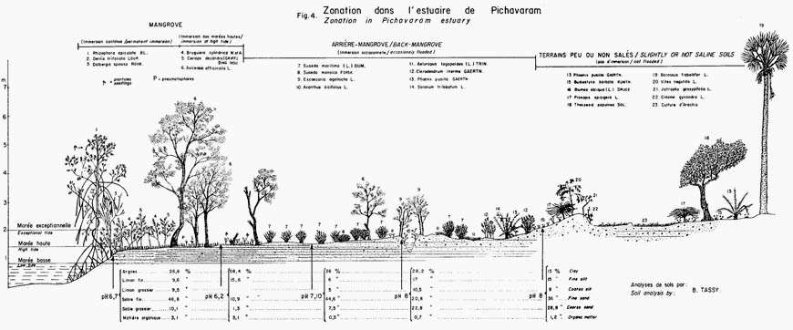

Back-mangrove.
In mangrove forests, we can recognize three zones : the mangrove proper, the back mangroves and the slightly or not saline soils. The back-mangrove is a bushy, discontinuous vegetation type with Avicennia here and there and few other halophytes species.